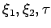
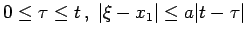

Inhalt Index DeskTop Bronstein

 Differentialgleichungen Partielle Differentialgleichungen Partielle Differentialgleichungen aus Naturwissenschaft und Technik Wellengleichung
Differentialgleichungen Partielle Differentialgleichungen Partielle Differentialgleichungen aus Naturwissenschaft und Technik Wellengleichung


Wenn  ist, sind auf den rechten Seiten der Formeln (9.104a,b,c) Korrekturglieder zu addieren:
ist, sind auf den rechten Seiten der Formeln (9.104a,b,c) Korrekturglieder zu addieren:
| (9.105a) |
für ein Gebiet  , das durch beschrieben wird mit .
, das durch beschrieben wird mit .
| (9.105b) |
wobei K ein Gebiet des -Raumes ist, das durch die Ungleichungen definiert ist.
| (9.105c) |
wobei T das Dreieck  bedeutet. In den angegebenen Formeln steht a für die Ausbreitungsgeschwindigkeit der Störung.